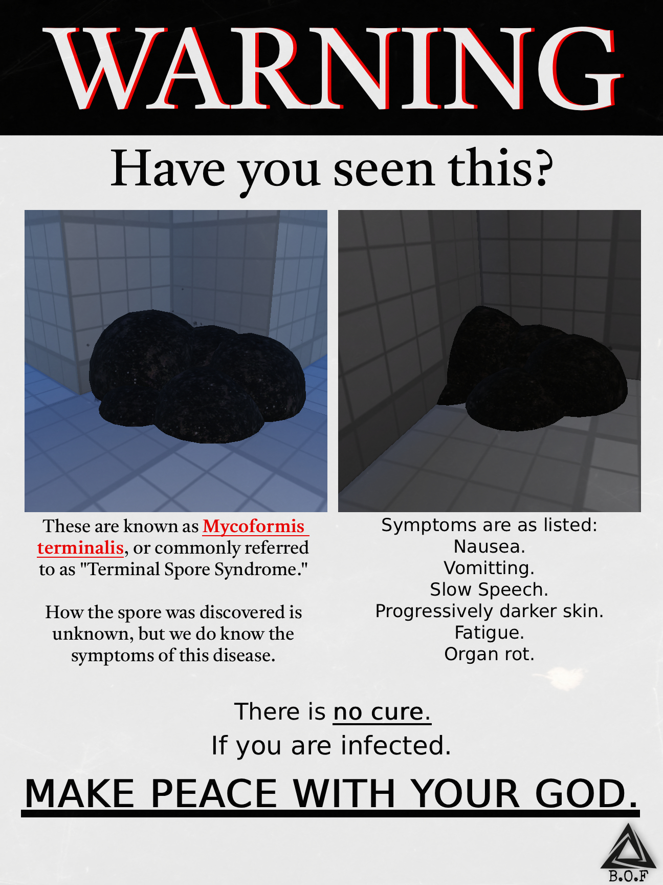

FACILITY █ — ARCHIVAL NODE 7
ACCESS LOGS RECOVERED — ORDER CORRUPTED. Dr.Xeron incase the files get corrupted I hope you remember the code was the hour of each log event in order. -Dr.Fall3n
.
[LOG 9]
TIME: 20.02 — 18:43
LOCATION: CSFBT-1 LOWER WING
E-1623 IS NO LONGER RESPONDING TO LIGHT STIMULI.
BLEACH-1 ACTIVITY HAS SHIFTED FROM AGGRESSIVE TO PURPOSEFUL.
SUBJECT IS NO LONGER ACTING LIKE A HOST.
IT IS ACTING LIKE A VECTOR.
NOTE: DR. XERON REQUESTED DATA LOCK.
REQUEST DENIED.
[LOG 2]
TIME: 19.02 — 11:52
EXPERIMENT 1623-DELTA-0921-A INITIATED.
BLEACH-1 ADMINISTERED VIA INJECTION.
SUBJECT E-1623 SHOWS NO IMMEDIATE REACTION.
VITALS NORMAL.
SUBJECT HUMMING.
[LOG 7]
TIME: 20.02 — 02:11
SUBJECT REQUESTED LIGHTS BE TURNED OFF.
REQUEST DENIED.
SUBJECT SAID:
"IT SEES BETTER WHEN YOU DON'T."
SECURITY REPORTED SHADOW MOVEMENT
WITHOUT CORRESPONDING MASS.
[LOG 4]
TIME: 19.02 — 16:03
BLEACH-1 SHOWING UNDOCUMENTED TRAITS.
PRION IS NOT DEGRADING NEURAL PATHWAYS.
IT IS REWRITING THEM.
REFERENCE: BL-1-DESC (REDACTED COPY)
[LOG 11]
TIME: UNKNOWN
AUTOMATED SYSTEM MESSAGE:
"CONTAINMENT FAILURE DOES NOT MEAN ESCAPE."
INCIDENT TAGGED: SHADOW/5586
[LOG 1]
PROJECT BLEACH-1 APPROVED.
GOAL: HUMANOID ENHANCEMENT.
FAILURE IS ACCEPTABLE.
TERMINATION IS EXPECTED.

[LOG 8]
TIME: 20.02 — 07:01
EXPERIMENT OFFICIALLY MARKED:
UNSATISFACTORY.
UNOFFICIAL STATUS:
ONGOING.
SUBJECT NOT LOCATED.
[LOG 5]
TIME: 19.02 — 19:44
SUBJECT NO LONGER BLEEDS.
FLUID IS BLACK.
INFECTIOUS.
DR. MAYR REQUESTED TERMINATION.
REQUEST DENIED.
[LOG 12]
POST-MORTEM REPORT FILED FOR E-1623.
ERROR:
SUBJECT LISTED AS DECEASED
PRIOR TO FINAL OBSERVATION.
SEE LOG 9.
[LOG 14]
[FAFAIRSS LOGS ON 20:02.2### BASED OFF KEYCARD ACTIVITY & SYSTEM’S LOGS]
12:32 PM: Dr.Niemi LEFT THE LABORATORY
12:32 PM: Dr.Niemi LEFT THE MAINTENANCE ROOM
12:37 PM: Dr.Niemi LEFT THE FACILITY
1:02 AM: Dr.Nickson LEFT THE LABORATORY
1:03 AM: Dr.Jackson LEFT THE LABORATORY
1:03 AM: Dr. HaroldLEFT THE LABORATORY
1:03 AM: Dr.Mayr LEFT THE LABAROTARY
1:04:AM Dr.Mayr LEFT THE MAINTENANCE ROOM
1:04 AM: Dr.Nickson LEFT THE MAINTENANCE ROOM
1:04 AM: Dr.Jackson LEFT THE MAINTENANCE ROOM
1:04 AM: Dr.Harold LEFT THE MAINTENANCE ROOM
1:12 AM: Dr.Mayr LEFT THE FACILITY
1:12 AM Dr.Nickson LEFT HE FACILITY
1:13 AM Dr.Niemi LEFT THE FACILITY
1:14 AM: Dr.Harold LEFT THE FACILITY
1:14 AM: Dr.Jackson LEFT TE FACILITY
2:40 AM: Dr.Fall3n LEFT THE FACILITY
3:02 AM:Dr.Xeron ENTERED THE E-1623 CONTAINMENT CHAMBER
3:39 AM: Dr.Xeron ████████ ██████████ ██████████████ ███ ████████████ ██████
4:10 AM: Dr.Xeron LEFT THE E-1623 CONTAINMENT CHAMBER
4:11 AM: Dr.Xeron LEFT THE LABORATORY
4:11 AM: Dr,Xeron LEFT THE MAINTENANCE ROOM
4:17 AM : Dr.Xeron CLOSED THE CHECKPOINT
4:17 AM: Dr.Xeron LEFT THE FACILITY
7:42 AM: Dr.Xeron OPENED THE CHECKPOINT
7:42 AM: Dr.Xeron ENTERED THE FACILITY
7:49 AM: Dr.Xeron ENTERED THE MAINTENANCE ROOM
7:49 AM: Dr.Xeron ENTERED THE LABORATORY
8:00AM: Dr.Fall3n ENTERED THE FACILITY
8:07 AM: Dr.Fall3n ENTERED THE MAINTANCE ROOM
8:07 AM: Dr.Fall3n ENTERED THE LABORATORY
8:10 AM: Dr.Niemi ENTERED THE FACILITY
8:12 AM: Dr.Nickson ENTERED THE FACILITY
8:15 AM: Dr.Jackson ENTERED THE FACILITY
8:16 AM: Dr.Harold ENTERED THE FACILITY
8:23 AM: Dr.Niemi ENTERED THE MAINTENANCE ROOM
8:23 AM: Dr.Nickson ENTERED THE MAINTENANCE ROOM
8:23 AM: Dr.Jackson ENTERED THE MAINTENANCE ROOM
8:23 AM: Dr.Harold ENTERED THE MAINTENANCE ROOM
8:23 AM: Dr.Niemi ENTERED THE LABORATORY
8:24 AM: Dr.Nickson ENTERED THE LABORATORY
8:24 AM: Dr.Jackson ENTERED THE LABORATORY
8:24 AM: Dr.Harold ENTERED THE LABORATORY
9:12 AM: Dr.Niemi LEFT THE LABORATORY
9:12 AM: Dr.Niemi LEFT THE MAINTENANCE ROOM
[LOG 3]
TIME: 19.02 — 12:31
SUBJECT REPORTS NAUSEA.
DESCRIBES SENSATION AS:
"SOMETHING BLOOMING."
THERMAL SCANS INCONCLUSIVE.
[LOG 10]
TIME: 20.02 — 15:26
CAMERA FEED LOST.
LIGHT SYSTEMS ACTIVE.
NO SHADOWS PRESENT.
[LOG 6]
TIME: 19.02 — 23:58
SUBJECT STOPPED SCREAMING.
SUBJECT STARTED LISTENING.
AMBIENT AUDIO CONTAINS
ADDITIONAL VOICE.
[LOG 13 — DOCUMENT BL-1-DESC]
LEVEL OF CLEARANCE: 4
ITEM #: BLEACH-1
DESCRIPTION:
BLEACH-1 IS A FAILED EXPERIMENTAL PRION CURRENTLY STORED AT SITE CSFBT-1.
RESEARCH IS HIGHLY CLASSIFIED DUE TO SABOTAGE AND BREACH RISK.
ORIGINAL PURPOSE: HUMANOID ENHANCEMENT.
KNOWN TRAITS:
- 100% INFECTIOUS
- 100% LETHAL
- TRANSMISSION VIA MUCOUS MEMBRANES AND ALL BODILY FLUIDS
- NOT AIRBORNE
- NOT WATERBORNE
SYMPTOM PROGRESSION:
- MANIFESTATION WITHIN 6 HOURS POST-EXPOSURE
- INITIAL FLU-LIKE SYMPTOMS WITH HIGH FEVER
- SEVERE DEMENTIA IN LATER STAGES
- COMA ONSET ~20 HOURS AFTER INITIAL SYMPTOMS
- COMA IS CONSIDERED CLINICAL DEATH
PHYSIOLOGICAL EFFECTS:
- SPORADIC CELLULAR NECROSIS RESEMBLING GANGRENE
- SURVIVING TISSUE RETAINS ORIGINAL FUNCTION
- RED BLOOD CELLS SHOW INCREASED OXYGEN CAPACITY
- BLOOD FLOW SLOWED; MUSCLE ENDURANCE INCREASED
- NERVOUS AND MUSCULAR SYSTEMS FUNCTION DESPITE ORGAN FAILURE
- METABOLISM MAY DROP TO EXTREMELY LOW LEVELS
- SUBJECT MAY SURVIVE >10 YEARS WITHOUT NUTRITION
BEHAVIORAL DEGRADATION:
- CONDITIONED BEHAVIOR AND COGNITION SEVERELY DAMAGED
- LIMITED MOTOR FUNCTIONS REMAIN
- SUBJECT ATTRACTED TO SIGHTS, SOUNDS, AND ODORS OF HUMANS
- SUBJECT ATTEMPTS INGESTION UPON CONTACT
TERMINATION PROTOCOL:
- REQUIRES SIGNIFICANT CRANIAL TRAUMA
RESEARCH NOTE:
FURTHER EXPERIMENTS ARE ENCOURAGED.
EXTREME CAUTION ADVISED.
GOAL REMAINS ENHANCEMENT — NOT TERMINATION.
█